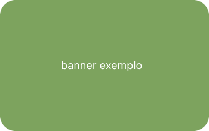

Pesca e Lançamento



A FEDERAÇÃO PAULISTA DE PESCA E LANÇAMENTO – FPPL – fundada em 17/07/1969, é a primeira Federação oficial do desporto da pesca e do lançamento do Estado de São Paulo, regularmente inscrita junto aos órgãos competentes, cuja finalidade é a de atender a todos que a ela se dirigirem, independente de classe social, nacionalidade, sexo, raça, cor ou crença religiosa, gozando de autonomia administrativa, funcional e organizacional, nos termos da legislação vigente no País.
No curso de cada ano, proporciona a prática desportiva da pesca amadora e de competição por todas as entidades e pessoas devidamente credenciadas, dirimindo, difundindo, protegendo e incentivando o desporto em todas as suas modalidades e segmentos (lazer, competitivo, turístico, preservacional, etc.), entre seus filiados (pessoas jurídicas e físicas, quais sejam, clubes filiados e respectivos atletas), ou entre estes e associações não-filiadas, e, para tanto, autoriza e/ou supervisiona os desportos da pesca, do lançamento limitado, e do long casting em nível estadual, sem pré obedecendo as normas regulamentadoras de cada espécie.
A FPPL é filiada à Confederação Brasileira de Pesca e Lançamento – Nova Pesca Brasil, entidade criada em 02/11/2012, com o intuito de democratizar as decisões e normas em âmbito nacional, com a participação ativa de todas as Federações Estaduais que a compõem (por exemplo, Rio Grande do Sul, Santa Catarina, São Paulo, Rio de Janeiro, Espírito Santos e outros).
A FPPL coloca seus Departamentos à disposição, tanto para os Órgãos Públicos, bem como para associações e pessoas interessadas em participar, conhecer e/ou organizar eventos da pesca e do lançamento de competição ou de lazer.


Redes Sociáis
Siga o clube Cardume Dourado nas redes sociais e fique por dentro de tudo